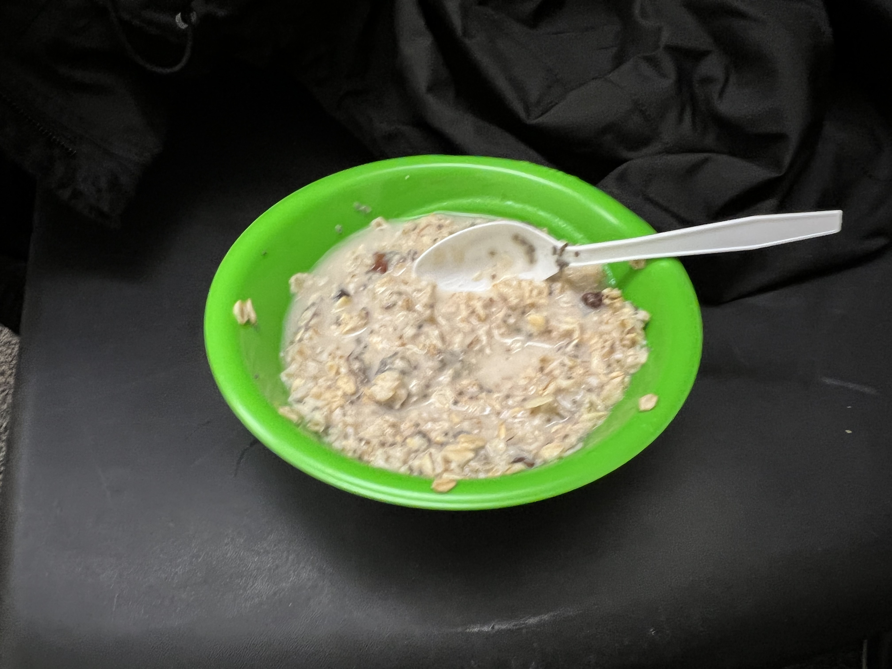

Oatmeal
Low GI, High satisfaction.

Let's get straight into it. Oatmeal has comfortable methods of preparation, but here I will share the one that is on top.
- 1. Purchase Steel Cut Oats
- Steel Cut Oats are among the most under-purchased forms of oats across the world, and this is the biggest mistake. Steel Cut Oats gain an edge with their greater density and higher fiber content and they taste fantastic, so use these for this recipe. Here is a link that explains this food item.
- 2. Water Ratio and Cooking
- This is where the magic happens. Create a ratio of 1/3 or 1/4 of oats to water depending on who you are as a person. Let the oats cook on the stove on medium to medium low heat for 12-18 minutes, decreasing the heat approximately halfway close to the end.
- 3. Toppings
- With oatmeal toppings comes great subjectivity, but I shall offer my fundamental topping suggestions nevertheless. I reccomend honey, walnuts, blueberries (any fruit except oranges. Even those will work to be honest, but be careful.), pumpkin seeds, and anything else!
Homepage
Next Recipe